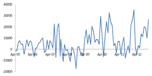

Paper Title :
Impact of interest rate differentials on Net foreign institutional investment (FIIs) in India
Abstract
This paper examines the effect of interest rate differential on net capital flows to India by taking net foreign institutional investments as proxy for capital flow. Monthly data from April, 2005 to December, 2012 were procured and analyzed using time series econometric modeling. The co-integration results show that interest rate differential does not have any significant long-run impact on net foreign institutional investments flows to India. Further, only two variables namely, foreign exchange rate and Bombay stock exchange return have significant impact on Net foreign institutional investments and between the two, Bombay stock exchange index/return is the major pull factor for Net foreign institutional investments flows into Indian financial market. Results imply that monetary policy actions should continue to be guided by objectives related to inflation and growth and the management of capital flows resulting from monetary policy actions should be left to other instruments.
Author
Virender Kumar
Research Scholar, Department of Economics
Delhi School of Economics, University of Delhi
Delhi, India
Vijender Kumar
Independent Researcher and Consultant
M.A. Economics, Department of Economics
Delhi School of Economics, University of Delhi, India
Raj Kumar
Research Scholar, Department of Economics
Delhi School of Economics, University of Delhi
Delhi, India
Paper Transcript of Paper Titled :
Impact of interest rate differentials on Net foreign institutional investment (FIIs) in India
Impact of interest rate differentials on Net foreign institutional investment (FIIs) in India
Virender Kumar
Research Scholar, Department of Economics,
Delhi School of Economics, University of Delhi
Delhi,
India
Vijender Kumar
Independent Researcher and Consultant,
M.A. Economics, Department of Economics,
Delhi School of Economics, University of Delhi, India
Raj Kumar
Research Scholar, Department of Economics,
Delhi School of Economics, University of Delhi
Delhi,
India
Abstract— This paper examines the effect of interest rate differential on net capital flows to India by taking net foreign institutional investments as proxy for capital flow. Monthly data from April, 2005 to December, 2012 were procured and analyzed using time series econometric modeling. The co-integration results show that interest rate differential does not have any significant long-run impact on net foreign institutional investments flows to India. Further, only two variables namely, foreign exchange rate and Bombay stock exchange return have significant impact on Net foreign institutional investments and between the two, Bombay stock exchange index/return is the major pull factor for Net foreign institutional investments flows into Indian financial market. Results imply that monetary policy actions should continue to be guided by objectives related to inflation and growth and the management of capital flows resulting from monetary policy actions should be left to other instruments.
Keywords- Net Foreign Institutional Investments, Interest rate differential, Co-integration
Introduction
Difference in interest rate has often been considered as a major determinant of capital flows to Emerging Market Economies (EMEs) and at times, it is felt that that changes in monetary policy measures (conditioned on inflation-growth objectives) could dampen or magnify the volume of capital flows into a country. In this context, it is generally assumed that countries with relatively higher interest rate as compared to others would attract larger capital flows. For most of 2010 and 2011, there was widening in the growth as well as the interest rate differentials due multi-speed recovery of world economy and asymmetric monetary exit, creating concerns that there might be surges in capital flows to EMEs, which had to be managed. While EMEs used many possible instruments such as sterilized intervention to manage overvaluation of exchange rate, use of macro-prudential measures to stem risks to asset prices or use of capital controls to contain the magnitude of capital inflows, there is little support as yet to the claim that monetary policy actions were delayed just because of the risk they might pose in terms of influencing the composition and magnitude of capital flows.
Before the advent of global financial crisis, India had experienced surges in capital flows which were in excess of the financial needs of the current account deficit and therefore number of instruments such as sterilized intervention, a more open current account to push capital outflows by residents and occasional use of prudential measures to discourage capital inflows were used to manage the surplus. However, since the second half of 2010-11, unlike other EMEs, India has witnessed a relatively larger currency account deficit, suggesting the need for higher stable capital inflows. As a result, while the concerns relating to anti-inflationary policy attracting excessively larger capital inflows have eased, the use of interest rate to manage the composition and magnitude of capital flows is continuing. In this context, this paper focuses on whether actions of central bank (RBI) which affect interest rate differentials have been a major determinant of capital flows to India..
Objective/Testable Hypothesis
Capital flows to India principally has four components i.e. Foreign Direct Investment (FDI), Foreign Institutional Investments (FIIs), External Commercial Borrowings (ECBs) and Deposits of NRI. While the share of ECBs and NRI deposits in the total capital flows is very small (14% and 6.6% respectively)1, FDI is not likely to be affected by interest rate differentials as it depends on long-term fundamentals of the economy (Verma and Prakash, 2011)2. This paper, therefore, ignores other three components of capital flows and focuses only on foreign institutional investments as a proxy for capital flows and thereby analyze how net foreign institutional investment (NFII) is affected by interest rate differentials. The graph below shows how net foreign institutional investment has fluctuated in the recent periods (from April, 2005 to December, 2012).

- NetFII (crore rupees)
Background: Literature Review
Reference [3] tested for co-integration between net foreign capital inflows, real exchange rate and interest rate differential using quarterly data for the period 1993 to 2003. He found long-run relationship between these variables. He found an error correction mechanism for the post-liberalization period which related dynamic adjustment to capital flows to the movement in the interest rate differential and the real exchange rate.
Reference [4] studies the determinants of various components of equity flows and private debt flows to India. He found a high correlation between interest rate differential and ECB disbursements. He also found that there is strong co-movement of domestic activity and ECBs. Moreover, he observed that long run demand for external commercial borrowing by Indian corporate is affected by the pace of interest rate differentials, followed by pace of domestic real activity and domestic market’s credit conditions. With regard to portfolio investment, he found co-movement in the volatility of daily net FIIs and stock returns. Granger causality test showed the short run causal relationship between portfolio investment flows and stock prices. In addition, the Johansen’s approach to co-integration analysis implied a long-run relationship between the two variables.
Reference [5] studied the factors affecting portfolio investment flows into India using multivariate regression on monthly data for the period 1993-2011. They found that foreign institutional investments (FIIs) in India are affected by both domestic and external factors and qualitatively both have the equal importance. Important external factors were; external interest rate which adversely affected FII flows into India and the performance of emerging stocks which positively affected FII flows. Among domestic factors, credit rating downgrades, depreciation of rupee and lagged domestic stock market returns were found to affect net FII flows negatively. The existence of positive relationship between portfolio inflows and expected domestic returns and negative relationship between lagged domestic stock return and portfolio inflows has been explained by the authors in terms of bargain hunters (i.e. “buying on the dips”) which mean FIIs buying when market falls and FIIs selling of after the market rises. In order to check the robustness of this result, they estimated Vector autoregressive model (VAR) using daily data of BSE returns, FII flows and exchange rate in the forward market. They found a negative coefficient of lagged domestic stock market return with respect to FII flows.
Reference [6] studied the determinants of foreign capital flows into Turkey using Structural Vector Auto Regression (SVAR) model, variance decomposition functions and impulse response function for the period January 1992 to December 2005. Push-pull factors approach was used. As pull factors, he took Istanbul stock exchange index, current account balance, budget balance and real interest rate on Turkish T-Bills. As pull factors, he took US industrial production index and Interest rate on 3-month US T-Bills. Result was general dominance of pull factors over push factors in determining foreign capital flows into Turkey. More specifically, he found that capital flows were negatively related with budget balance and current account balance. He found a positive relationship between capital flows and stock market index. Moreover, he found that a shock in real interest rate in Turkey resulted in immediate capital outflow in Turkey between the periods January, 1992 to December, 2005.
Reference [7] conducted cross sectional study of 8 countries; Argetina, India, Australia, Indonesia, Chile, Columbia, Brazil and Mexico using SUR analysis for factors affecting capital flows. According to his study, one of the important factors affecting capital flows in all of these 8 countries was their foreign exchange reserves and the level of gross domestic product was the another factor influencing capital flows in these countries.
In totality, there are many factors that affect capital flows in an economy. This paper looks to determine the important factors affecting capital flows in India and whether monetary policy actions have any ramification on the capital inflows in India (particularly on FIIs).
Theoretical framework
Let there be perfect capital mobility in world capital market. Let ‘id’ denotes interest rate in domestic country on government bond and ‘if’ denotes foreign interest rate (US in present study). The equilibrium in the world capital market would occur at a point where assets of all countries will offer same expected return, when they are expressed in same currency. This particular condition of equilibrium in world capital market is known as “Uncovered Interest Parity Condition (UIP)”. Mathematically, it is represented as.
_in_India_clip_image004.gif) Where ‘id’ denote domestic interest rate, ‘if’ denote foreign interest rate, Ed/f denote foreign exchange rate (price of foreign currency in terms of domestic currency), and Eed/f denote expected foreign exchange rate. Given the definitions, the term
Where ‘id’ denote domestic interest rate, ‘if’ denote foreign interest rate, Ed/f denote foreign exchange rate (price of foreign currency in terms of domestic currency), and Eed/f denote expected foreign exchange rate. Given the definitions, the term
denotes expected depreciation of foreign currency against domestic currency.
The left hand side (LHS) of condition (1) denotes expected return on domestic assets while the right hand side denotes expected return on foreign assets in terms of domestic currency, measured by the sum of foreign interest rate and expected depreciation of domestic currency against foreign currency. The condition (1) can be rewritten as:
_in_India_clip_image008.gif)
The left hand side (LHS) of condition (2) is called expected return differentials between the assets of two nations and can be assumed as a proxy for interest rate differentials between the two nations. As per UIP hypothesis, if there is a positive expected return differential (i.e. if left hand side of equation (2) is positive), there will be inflow of foreign capital in the economy. However, if expected return differential is negative, there will be outflow of foreign capital. The further analysis is based on these premises.
V. Methodology–Model Specification, Definition of Variable and Data Collection, and Econometrics Methodology
Model Specification
Although the whole analysis is built on premises mentioned in section 3, there are other factors also which affect capital flows in developing countries like India such as stock market return, change in exchange rate, industrial production index, inflation, rate of growth in OECD nations etc. Therefore, to control for such variables along with interest rate differential, multivariate time series model has been used, represented as below
Definition of Variables and Data Collection
The present study uses monthly data from April, 2005 to December, 2012. These data has been derived from various sources such as; SEBI, RBI, US Treasury Department, Bombay Stock Exchange, OECD, MOSPI and World Bank. The table1 shows definition of various variables and their data sources
|
||||
Variable Construction |
Definition |
Nature of Data |
Sources |
Note |
NetFII |
Net FII inflow (Crore rupees) |
Monthly |
SEBI |
-- |
iIndia |
Interest rate on 91 days Indian government T- bills |
Monthly |
RBI |
Simple average of 4 weeks’ values to get data for a month |
iUS |
Interest rate on 3 months US T-bills |
Monthly |
US Treasury Department |
Simple average of daily values to get data for a month |
Int_ratediff: (iIndia-iUS) |
Interest rate differentials |
Monthly |
|
Difference between interest rate on 91 days Indian government T- bills and 3 months US T-bills |
IIPindia |
Index of industrial production |
Monthly |
MOSPI |
-- |
BSEindex |
Bombay stock exchange index |
Monthly |
BSE |
Change in BSE index has been used as a proxy for stock market return |
Exchange_rate |
rupee/dollar exchange rate |
Monthly |
Exchange ratesOrg |
-- |
Inflationcpi |
Consumer price index in India |
Monthly |
MOSPI |
-- |
Oecd_growth rate |
Combined growth rates in OECD nations |
Monthly |
OECD |
Quarterly growth rates were adjusted to get monthly growth rate |
Source: Authors’ Compilation
Econometric Methodology
- Time series econometric techniques8 were used to estimate the multivariate time series model represented by equation 3 in the previous section. In the process, following steps were followed
- In time series data, problem of non-stationarity is encountered, which results in spurious relationships among the variables of interest. To check stationarity of each variable, Augmented Dickey Fuller (ADF) test was used.
- Granger Causality test was used to determine the causal/short term relationship between different variables.
- If there is any causal relationship, Johansen co-integration estimation procedure was used to derive long-term relationship between the variables.
- Lastly, if variables were co-integrated, error correction model (ECM) was estimated to know the speed of adjustment parameters.
VI. Estimation and Results
|
||
Variables |
ADF Test |
|
Level |
1st difference |
|
NetFII |
-1.1 |
-7.33*** |
Int_ratediff |
0.09 |
-4.34*** |
LIIPindia |
-1.93 |
-5.28*** |
LBseindex |
0.95 |
-4.69*** |
LForgnex_rate |
0.39 |
-5.06*** |
Inflationcpi |
0.19 |
-5.87*** |
oecd_growth |
-2.17** |
-4.83*** |
Forgnex_rate |
0.36 |
-5.20*** |
Bseindex |
0.42 |
-4.71*** |
IIPindia |
-1.86 |
-5.37*** |
Source: Authors’ Calculation |
||
Table 2 presents the results of unit root and the order of integration. Sequential procedure for testing the unit root under ADF test was run.
It was noted that all variables except oecd_growth are non-stationary (i.e. have unit root) at the level; however, all variables become stationary (i.e. have no unit root) at the first difference. This implies that all variables except oecd_growth are integrated of order one.
The Granger causality test on monthly data (from April 2005 to December 2012) in VAR framework showed a unidirectional causality between net foreign institutional investment inflow and interest rate differential (between 91 days Indian government T-bills and US 3-month T-bills) implying interest rate differential granger caused net FII flows to India. This short-run relationship between net FII and interest rate differential does not conform to the perception that FII flows are primarily influenced by asset price movements rather than interest rates. In this context, it is important to point out that a portion of FII is made in debt instruments which are likely to be affected by change in interest rate differential. The result for granger causality has been represented in the table 3 and table 4.
|
|||
Null Hypothesis |
Obs |
Chi-sq |
Prob |
DINT_RATEDIFF does not Granger Cause DNETFII |
90 |
3.63065 |
0.0307 |
DINT_RATEDIFF does not Granger Cause DNETFII |
|
0.09619 |
0.9084 |
Source: Authors’ Calculation
|
|||
Null Hypothesis |
Obs |
Chi-sq |
Prob |
INT_RATEDIFF does not Granger Cause NETFII |
91 |
4.24229 |
0.0175 |
NETFII does not Granger Cause INT_RATEDIFF |
1.24844 |
0.2921 |
|
Source: Authors’ Calculation
As granger causality test showed a causal relationship from interest rate differential to FII flows, which was not in conformity with the theoretical expectations. It was necessary to examine the relationship further and check whether there was existence of any long-run relationship between interest rate differential and FII flows using the Johansen co-integration framework. For this, net FII flow was taken as dependent variable and interest rate differential, logarithm of rupee/dollar exchange rate, logarithm of index for industrial production in India, logarithm of Bombay stock exchange index and inflation rate as independent variables. The coefficient of BSE index and foreign exchange rate were found to be statistically significant, indicating that these variables impact FII inflows, however, interest rate differential and index of industrial production (IIPIndia) were found to be statistically insignificant. This result was in contrast to the unidirectional causality which was found using granger causality test from interest rate differential to FII inflows. Thus, as per co-integration framework, interest rate differential does not have any significant long-run impact on net FII flows to India. It might possible that in the short run, when there is increase in domestic interest rate, bond price falls, thus become attractive to the investors, and thereby inducing some investors to switch portfolio from shares to bonds. This, as a result, may cause equity prices to fall (as demand for equity would fall) and may possibly result in large buying of equity by FIIs to take advantage of lower stock prices. Such behavior may explain the short-run causal relationship which existed from interest rate differential to Net FIIs.
|
|
Variables |
Co-integrating Equation |
NetFII |
1 |
INT_RATEDIFF |
796.4223 |
LIIPINDIA |
-1170.4 |
LBSEINDEX |
4308** |
LFORGNEX_RATE |
-1672.9*** |
Intercept |
3840.7 |
Source: Authors’ Calculation |
|
Taking exchange rate, co-integration results established negative relationship between Net FII and exchange rate. This may be because increase in exchange rate (i.e. depreciation of rupee) would mean decline in the expected return on Indian assets, thereby causing FIIs to fall and vice versa. The sign of coefficient of IIP India is negative which does not conform to theoretical expectation as was expected Net FII to increase as IIP in India increases. However, since the variable is insignificant, the wrong sign is not much of the problem. The sign of BSE index is positive. This positive relationship between Net FII and BSE index signifies that an increase in BSE return results in increase in FII flows to India as Indian assets become more attractive for investment. As expected, BSE index/return is the major pull factor for Net FII flows into Indian financial market, with 1% increase in BSE Index causing net FII to increase by 4,308 crore rupees.
VII. Conclusion
This study has empirically tested the sensitivity of interest rate differential on NetFII (proxy for capital flows) into Indian financial market. The study (using co-integration framework) shows that interest rate differential does not have any significant long-run impact on net FII flows to India. Nevertheless, they may exist some short run causal relationship from interest rate differential to FII flows due to the fact that a portion of FII is made in debt instruments which are likely to be affected by change in interest rate differential.
Changes in foreign exchange rate and stock market index (BSE index) are found to have statistically significant impact on Net FII flows into India and between the two, BSE index is the major pull factor for Net FII flows (capital flows) into Indian financial market.
Thus, in view of monetary policy, changes in interest rate do not have significant impact on net FDI and FII flows as they are primarily determined by long-run growth prospects of Indian economy and stock market returns respectively. In other words, monetary policy actions (which affect interest rate differential) are not a major determinant of capital flows to India. The implication of this result is that monetary policy actions should continue to be guided by objectives related to inflation and growth and the management of capital flows resulting from monetary policy actions should be left to other instruments.
References
R. Ranjan, “India’s Experience with Capital Flow Management”, Meeting of BRICS Economic Research Group, Reserve Bank of India (RBI), 2011.
R. Verma and A. Prakash: “Sensitivity of Capital Flows to interest rate differentials: An Empirical Assessment for India”. RBI Working Paper Series. 2011.
I. Chakrabarty “Capital Inflows during the Post-Liberalisation Period”, Economic and Political Weekly, Vol-XLI No. 02, pp. 143-150, January 14, 2006.
B. Singh, “Changing Contours of Capital Flows to India”, Economic and Political Weekly, Vol-XLIV No. 43, pp.58-66, October 2009.
J. Gordon and P. Gupta, “Portfolio Flows into India: Do Domestic Fundamentals Matter?” IMF Working Paper No 03/20, International Monetary Fund, 2003.
Çulha, Ali, “A Structural VAR Analysis of the Determinants of Capital Flows Into Turkey”, Research and Monetary Policy Department, Working Paper No: 06/05, the Central Bank of the Republic of Turkey, 2006.
M. Ralhan, “Determinants of Capital Flows: A Cross-Country Analysis. Econometrics Working Paper EWP0601, University of Victoria, ISSN 1485-6441, 2006.
Damodar N.Gujrati, “Basics of Econometrics”, 5rth edition, McGraw-Hill, 2005.
- AUTHORS PROFILE
- Mr. Virender Kumar is research Scholar in Department of Economics, Delhi school of Economics. He has done post graduation in economics from Delhi school of Economics.
- Mr. Vijender Kumar is independent researcher and consultant. He has done post graduation in economics from Delhi school of Economics.
- Mr. Raj Kumar is research Scholar in Department of Economics, Delhi school of Economics. He has done post graduation in economics from Jawaharlal Nehru University.